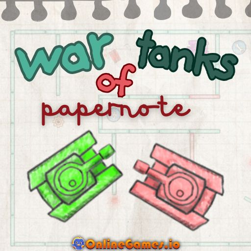

War of Tanks Paper Note
拿起你最喜欢的涂鸦笔，直接进入《坦克战争》的纸质笔记。
游戏说明
这是一个免费的在线坦克游戏，看起来像是在一节非常无聊的数学课上画的，因为这个游戏太有趣了！每条线、激光围栏和装甲炮塔都画在方形笔记本纸上。这个动作感觉和任何成熟的街机射击游戏一样激烈。你将引导一辆小型手绘坦克穿过旋转障碍物、铅笔红色激光网格和敌人涂鸦的迷宫，这些涂鸦会毫不犹豫地将你从页面上抹去。此外，您还可以在同一键盘上与朋友对战。这款免费游戏以迷人的纸质工艺风格包裹着乐趣，让战场既怀旧又崭新。

War of Tanks Paper Note
★★★★☆
4.2
《坦克战争笔记》由NeplingameStudio制作。
2025年6月13日
玩法说明
在标题页上选择1P和2P。在单人游戏中，你将面对一个分为三个主要区域的障碍赛道，每个区域都有发光的红色激光门。摧毁标记的目标、坦克、炮塔或步兵集群，以关闭这些激光并解锁下一个区域。左上角的绿色健康栏显示了你还剩下多少潦草的盔甲。当它排空时，你的油箱会被压成纸屑，跑步结束。
操作说明
- 移动W/A/S/D
- 拍摄空间
- 重新启动R